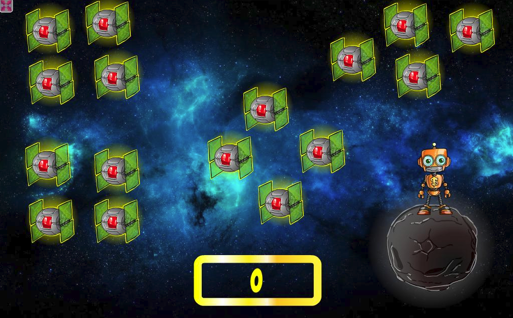
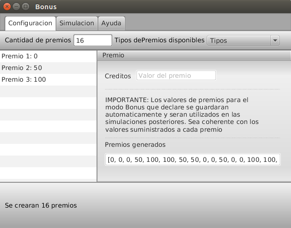
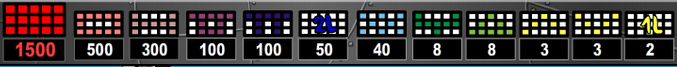
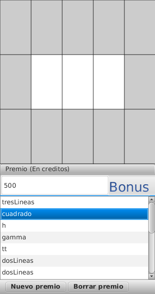
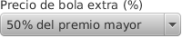

Bingo Bot Simulador 1.0
Herramienta de simulación capaz de implementar reglas configurables para el juego Bingo Bot. Todos los derechos reservados. Prohibida su venta y/o reproducción parcial o total. Implementado bajo Java 1.7 SE y JavaFX como interfaz grafica
El Generador de numeros pseudo-aleatorios
Un generador de números aleatorios (RNG por sus siglas en inglés) es un dispositivo informático o físico diseñado para producir secuencias de números sin un orden aparentemente
En el presente desarrollo el RNG es un servicio que esta disponible para todos los puntos del desarrollo en la cual se necesite modelar comportamento aleatorio.
Implementacion
@Scheduled(fixedRate = 1000)
public static void generarNumeros() {
synchronized(PlanificadorNumerosAleatorios.class) {
boolean seguirGenerando = true;
int n = config.cantidadTotalDeNumerosAGenerar();
double alpha = 100 - config.confianza();
while(seguirGenerando){
Random random = new SecureRandom();
double[] numbers = new double[n];
for (int i = 0; i < n; i++) {
numbers[i] = random.nextDouble();
}
boolean cumplemedias =
cumplePruebaDeMedias(numbers, alpha);
boolean cumpleVarianza =
cumplePruebaDeVarianza(numbers);
boolean cumpleChiCuadrado =
cumplePruebaChiCuadrado(numbers);
boolean cumpleCorridasArribaYabajo =
cumplePruebaDeCorridasArribaYabajo(numbers);
if (cumplemedias && cumpleVarianza && cumpleChiCuadrado
&& cumpleCorridasArribaYabajo) {
numeros = numbers;
seguirGenerando = false;
}
}
}
}
Cantidad de numeros por bloque
Se generan 100 numeros pseudo-aleatorios y se los mantiene en memoria durante 1 segundo
Confianza
Los numeros generados cumplen con tener una confianza de aleatoriedad del 99% (segun lo establece GLI. Ver apartado 3 de la especificacion "Juegos de azar")
Pruebas
Cada banco de numeros generados se somete a 4 pruebas para corroborar que realmente cumplen con los criterios de aleatoriedad solicitados por GLI
- Prueba de medias
- Prueba de varianza
- Prueba de uniformidad Chi-Cuadrado
- Prueba de independencia de corridas arriba y abajo
Vista
En la solapa "RNG" el usuario puede visualizar los numeros que se estan generando en ese momento habilitando la casilla "mostrar numeros generados"
Estos numeros son utilizados en todos los puntos del simulador donde se requiera un comportamiento aleatorio. Dependiendo del contexto se utilizaran funciones de generacion de variables aleatorias
Una variable aleatoria es una variable que implementa un comportamiento puntual en el dominio del problema y que se genera siempre a traves de un numero aleatorio. Por ejemplo: al generar el bolillero es necesario generar numeros enteros de 1 al 75, en este caso se aplica la funcion f(ri) = (ri * 75) + 1
Bonus
Existen cartones del tablero que poseen un premio especial que consiste en lanzar un ciclo de seleccion de premios definidos por el usuario
El simulador cuenta con un modulo capaz de configurar la cantidad de premios a entregar en el bonus y la cantidad de creditos por premio. Para ingresar al mismo debe hacer click en el boton "Bonus" (boton parpadeante) en el menu de configuracion derecho, primero debe elegir un carton con bonus, si no existe puede crear un nuevo carton a traves del boton "Nuevo premio"
Premios
Existen un conjunto discreto de premios a entregar al jugador en el caso de que los cartones que desee apostar obtengan alguna de las figuras definidas
Usted puede configurar los premios a entregar al jugador mediante el panel de configuracion derecho, solo debe seleccionar un premio de la lista y hacer click en las casillas que desea que intervengan en el conteo del premio. Una vez que seleccione la casilla premiada la misma tendra un color gris
Bolas extra
El juego cuenta con un conjunto de 10 bolas extra, las mismas ayudan al jugador a seguir formando figuras premiadas. Cada bola extra tiene un costo

Criterio de liberacion
Las bolas extra seran liberadas siempre y cuando exista un carton habilitado por el juegador en el cual haya una figura que tenga altas probabilidades de salir. Se ha establecido que si a un carton de juego le falta 1(una) bola para formar una figura ganadora y, ademas esa figura tiene un premio mayor o igual a 8(ocho) creditos, entonces se ponen en juego las bolas extra
Costo por bola
La primer bola extra es gratis. Las siguientes bolas extra tendran un costo del 10% al 90% del valor del premio que podria ganar el jugador con esa bola extra. El costo se configura en porcentajes en el menu superior del simulador
Perfiles de jugador
Existen tres perfiles perfectamente diferenciados
- Jugador debil
- Jugador moderado
- Jugador fuerte
Cada uno de los perfiles implementados tiene un comportamiento distinto a la hora de tomar una decision con respecto a cuanto apostar en cada carton y tambien respecto de si comprar o no una bola extra